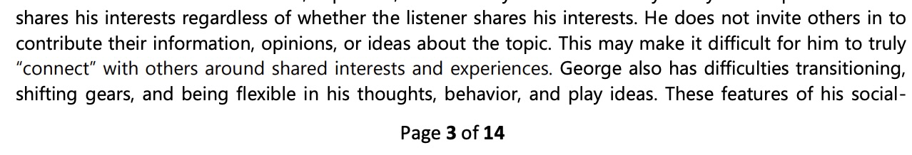
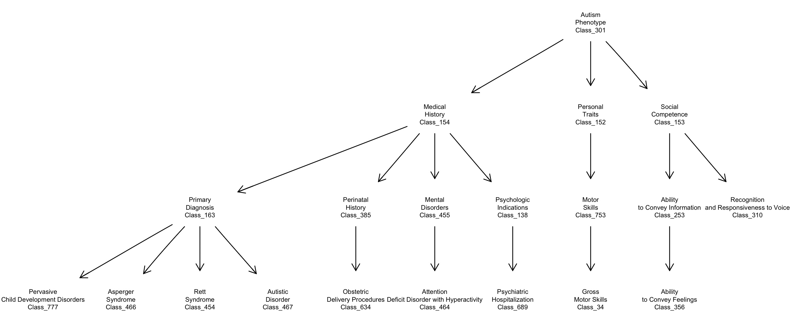

Basic concept
Here is an excerpt from a demonstrative NP evaluation on a public website:

NP excerpt
This package addresses the use of LLM technology to parse and tag the content of NP reports and to thereby enable the extraction of quantitative and qualitative features in a standardized and objective way.
A basic concern is to understand the potential role of ontologies of symptoms and behaviors related to the neuropsychological evaluation of individuals presenting with Autism Spectrum Disorder. Several ontologies have been developed in this area. An excerpt from a 2014 submission to NCBO is

ASDPTO excerpt
The publication underlying this ontology is in pubmed central.